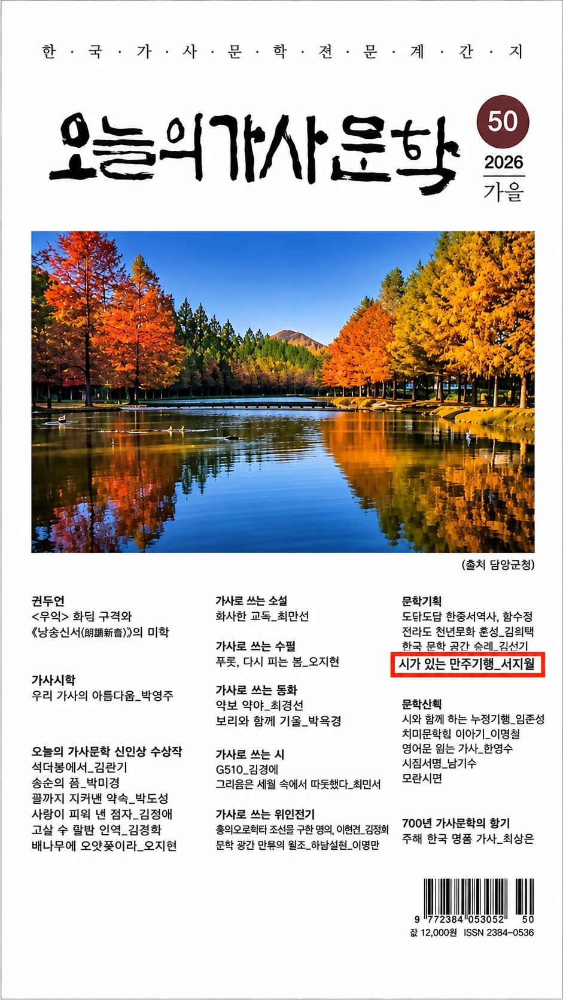

SPECIAL FEATURE / 문학기획
시가 있는 만주기행

만주의 땅에서 만나는 한민족의 시와 기억
「시가 있는 만주기행」 제40편은 남영전 토템시비동산의 ‘된장’ 시비를 찾아가는 여정을 소개합니다. 문학을 통해 삶의 터전과 민족의 기억을 잇는 기획으로, 한국과 중국 조선족 문학의 교류가 갖는 의미를 되새깁니다.
이번 제50호 한국시인 13인선은 김윤호, 김지훈, 김종근, 김환식, 배재경, 안채영, 우보, 윤경숙, 윤희경, 이명우, 이주하, 전진식, 지은경 시인의 작품으로 구성했습니다.
서지월 시인 디지털 문학관
서지월 시인의 서정시 60편과 시집·약력, 작품 해설 및 시낭송실을 감상할 수 있는 명도재 문학 특집관입니다.
서지월 시 60편 감상하기 ↗시화 및 음성 안내 · 시 텍스트는 제공된 시화 이미지를 읽어 옮긴 초안이므로, 출판 및 공개 전 원문과 대조하여 오탈자를 검수해야 합니다. 작품별 해설은 명도재 문학예술신문을 위해 새로 작성한 해설입니다. 낭송은 브라우저의 한국어 음성합성 기능을 이용하며, 여성 음성을 우선 선택하지만 기기에 따라 음색이 다를 수 있습니다. 별도 녹음된 전문 시낭송가 음원은 포함되어 있지 않습니다.
THE POETS / 가을호
한국시인 13인선
시인을 선택하면 해당 작품으로 이동합니다.
POETRY & ART / 시화를 보고 듣다
시화 감상 · 시 원문 · 작품 해설
각 작품의 시화를 먼저 감상한 뒤, 바로 아래에서 시 원문 전체를 텍스트로 읽을 수 있습니다. 시화 이미지를 누르면 확대되며, 아래에서 작품 해설도 확인할 수 있습니다. 낭송은 읽어주기와 정지 버튼으로 작동합니다.
검색 결과가 없습니다.